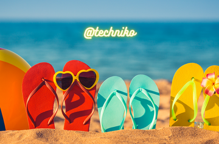

10 Top Tips For A Successful Summer Holiday!

Whisper it very quietly, but maybe, just maybe, it might be possible to have a holiday this year!
After over two long years of restrictions, lockdowns, red-lists, cancellations and reschedules, this summer might be the one where some sense of holiday .normality returns!
So, what do we need to do to prepare our additional needs children and young people for those holidays to come, whether they are overseas, UK based, or as remains the case for some of us, a staycation; heres 10 top tips to help:
Dont leave it to the last minute allow processing time
While the attraction of late holiday deals can be tempting, leaving deciding whether to go and where to go until the last minute can make it really difficult for children and young people who need processing time to prepare for a significant change. Plan as far in advance as you can.
Take a mental .journey though the holiday list the likely issues
Think about everything from the packing, the travelling, where you are going to stay and sleep, the things you are going to do on holiday, the people you might have with you and the people you might meet, the food you are going eat, everything. What are the likely issues going to be for your additional needs child or young person? List them, and then start to think about how to reduce the impact of each one. For example, if food is going to be an issue, could you contact the holiday provider and request a special menu? Or could you take some favourite food items with you?
• Create a .social story for the holiday
• A .social story is a sheet that uses photos, symbols and words to explain a bit about something new or complex for a child or young person with additional needs. You could create one for the holiday to outline all of the different things that your child or young person needs to know, giving them the tools to understand what the holiday will be like.
• Create a .visual timetable
• Put together a plan for each day, using symbols or photos to represent each aspect of that day for your child or young person. If possible, have a photo of them on some Velcro that they can move along the timetable as you go through the day. It will help them to know what is happening now, next, after, etc. There is an example of a visual timetable template on the Reachout ASC website above, called .Our Day At Home.
• Take favourite things
• What favourite toys or items does your child or young person use to help them to feel safe and secure? Make sure these arent forgotten, but pack them in your hand baggage, you dont want them getting lost! It may be that you could introduce a new item to take on holiday, something related to the place you are going; for example, if you are heading to Cornwall, you could get a toy seal to take with you for when you visit the Seal Sanctuary at Gweek. The toy seal could be your .holiday mascot and your child could have the job of looking after it.
• Having a .dry run and checking out special assistance
• If you are going to fly, and if the airport you are going to isnt too far away, you could take a journey just to see it, to have a look at where everything is. Most airports have special assistance for families travelling with a child or young person with additional needs, so it would be worth exploring what can be provided. Many airlines are supportive too, but it helps to ask for assistance well in advance.
• Have things to do
• Whether you are flying, going by train, or travelling by car, there will be long periods with nothing to do. Take a pack of activities that can be brought out to fill these gaps. Depending on your child, this could be some colouring, a book to look at, some fidget toys to use, some Lego, or something on their tablet to watch or listen to, whatever helps them fill the time and not get bored.
• Remember snacks, drinks, medication, essential equipment…
• We usually remember important things like tickets, passport, money, phones etc. but make a list of what else you will need. Do you need to take medication with you? Have you got enough, or do you need to request a repeat prescription well in advance? Have you got some snacks and drinks for the journey; dont rely on being able to stop somewhere on the way, you might be stuck in a huge traffic jam just at the time someone communicates that they are thirsty or hungry.
• Work with your child or young person, ask them
• Dont do all of these things on your own; if possible, involve your child or young person. Seek their input, what are the things that they are worried about? What do they want to have with them to help them feel safe? What resources will help them feel in control of whats going on? The more you talk about the holiday and work together through any fears, the more likely you are to have a successful trip. Its back to that .processing time that I mentioned in Tip 1.
• And finally… its OK to have a staycation instead!
If it all seems too daunting, too much to manage for you and your additional needs child or young person, if the complexities of trying to have a holiday somewhere else are just too great, dont put yourselves through a nightmare, have a staycation! Whatever you are hoping to do this summer, I hope these 10 tips will be a helpful reminder of some things that we can all do to make summer holidays a little less stressful and a little more fun. Have a great time!